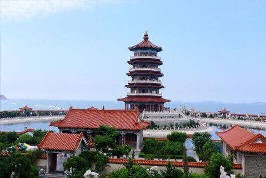

morly旅游网
蓬莱是山东省县级市，由烟台市代管。位于山东省东北部、烟台市境北部。蓬莱是国家历史文化名城。有历代名胜古迹100余处。建于宋嘉佑六年（1061）的蓬莱阁和建于宋庆历二年（1042）的蓬莱水城，均为国家重点文物保护单位。蓬莱历史悠久，新石器时代即有人类聚居。蓬莱有两个5A级景区，有两个4A级景区，还有许多3A级及以下的景区。
传说蓬莱、瀛州、方丈是海中的三座神山，为神仙居住的地方，自古便是秦皇汉武求仙访药之处。广为流传的“八仙过海”的神州传说，便源于此。蓬莱素有仙境之称，它的景色十分迷人。蓬莱比较出名的景点有蓬莱阁、三仙山、八仙渡、蓬莱海洋极地世界、君顶酒庄、文成城堡、艾山国家森林公园等景点。蓬莱阁位于山东省烟台市蓬莱市，是一处凝聚着中国古代劳动人民智慧和艺术结晶的古建群，是中国四大名楼之一，素以“人间仙境”之称闻名于世，其“八仙过海”传说和“海市蜃楼”奇观享誉海内外。登阁环顾，神山秀水尽收眼底。由于得天独厚的 地理环境，这里不仅一年四季景色有异，就连一日之间也变幻无穷，清晨，在观澜亭看 红日初升，霞光万道，蔚为壮观；黄昏，漫步阁下赏晚潮万顷，富有诗情画意。蓬莱阁的“海市蜃楼”为一奇观，每年春夏，夏秋之交，空晴海静之日，时有海 市出现，海上劈面立起一片山峦，或奇峰突起，或琼楼迭现，时分时聚，缥缈难测，不 由人不心醉神迷。千百年来，慕名而至的文人墨客络绎不绝，虽然大饱眼福的人不过十 之一二，却留存了观海述景的题刻二百余石。三仙山风景区位于山东省蓬莱市北端的黄海之滨，是一处集旅游观光与休闲度假于一体的综合性景区，更是山东半岛黄金旅游线上的一颗璀璨明珠。整个景区由和气大殿、小怡和园、蓬莱仙岛、方壶胜境、瀛洲仙境、瀛洲书院、艺术博物馆、蓬莱历史文化集锦、玉佛寺、万方安和、歌舞大剧院等景观组成。八仙渡是一个三面环海的葫芦岛，有一座八仙桥通向景区，将人间与仙境紧紧的连在一起，周围海域天高水阔，景色壮观，空气宜人，是一个天然的大氧吧。春夏之交，常有海市、海滋出现，虚幻缥缈，美不胜收。蓬莱海洋极地世界坐落于蓬莱丹崖山下，与著名的蓬莱阁毗邻，是一个集观赏性、娱乐性、趣味性、惊险刺激和反映海洋文化、海洋科技为一体的综合性展馆。在蓬莱海洋极地世界，有亚洲最大的海水大圆缸。在这里，尽显南国的海底珊瑚风光。飞流直下的瀑布，高大茂密的丛林，让您感觉仿佛到了南美亚马逊河流域的原始森林。蓬莱仙境还有许多美丽又好玩的景点，我就不一一讲述了。
蓬莱还有许多美食，有历史悠久、独特的海鲜风味的蓬莱小面，有色红、透明，溢香扑鼻，鲜嫩爽口的蓬莱卤驴肉，有味道鲜美的八仙宴等。蓬莱还有许多特产，例如优系红富士苹果、巴梨、蓬莱大花生等，都极具当地特色。
我希望人们在空闲时刻，可以去蓬莱走一走、看一看，去感受它如仙境一般的美丽景色。
交通指南
公路：境内有4条省级公路及206国道、威乌高速等高等级公路。206国道蓬莱至烟台段为双向八车道旅游专线，威乌高速与同三、京福等高速相连。
铁路：即将建成的德（州）—龙（口）—烟（台）铁路为国家一级铁路，设计时速160公里，预留时速200公里，初设单线，预留双线设计，铁路通过能力为1500万吨。在蓬莱段设北沟、王李、蓬莱、刘家沟、潮水五个站。
港口：现有港口4处，在建和建成万吨级以上泊位13个。拥有蓬莱新港、栾家口港两个国家一类对外开放港口，港口年吞吐能力达2200万吨，并规划建设10万吨级泊位2个。已开通连接山东半岛与辽东半岛及通往日本、韩国、香港等国家和地区的货运航线。蓬长客港年旅客吞吐量535万人次，蓬莱至旅顺客滚航线年旅客发送量24.9万人次,车辆5.8万辆。
航空：东距烟台莱山国际机场70公里。正在建设的烟台新国际机场位于蓬莱市潮水镇，建成后将与青岛、济南机场一起构成山东三大干线机场。新机场距蓬莱城区30公里。
蓬莱阁
蓬莱阁位于山东省烟台市蓬莱市，是一处凝聚着中国古代劳动人民智慧和艺术结晶的古建群。蓬莱阁包括三清殿、吕祖殿、苏公祠、天后宫、龙王宫、蓬莱阁、弥陀寺等几组不同的祠庙殿堂、阁楼、亭坊组成的建筑群，这一切统称为蓬莱阁。
三仙山
三仙山风景区位于山东省蓬莱市北端的黄海之滨，西与八仙过海景区、三仙山温泉相毗邻，北与长山列岛隔海相望，是一处集旅游观光与休闲度假于一体的综合性景区，更是山东半岛黄金旅游线上的一颗璀璨明珠。
八仙渡
山东蓬莱八仙过海景区蓬莱市北黄海之滨，与长山列岛隔海相望，是一个三面环海的葫芦岛，有一座八仙桥通向景区，将人间与仙境紧紧的连在一起，游览面积5.5万平方米，主要景点近40处。景区以道教文化和蓬莱神话为背景，以八仙传说为主题，突出大海仙山的创意，集古典建筑与艺术园林于一体，内涵丰富，意境深远，观览性极强。
蓬莱海洋极地世界
蓬莱海洋极地世界坐落于蓬莱丹崖山下，与著名的蓬莱阁毗邻，由蓬莱海锋实业有限公司投资4.6亿建设，是一个集观赏性、娱乐性、趣味性、惊险刺激和反映海洋文化、海洋科技为一体的综合性展馆。
内容整理至网络，如有侵权，请联系我们！1255394075@qq.com